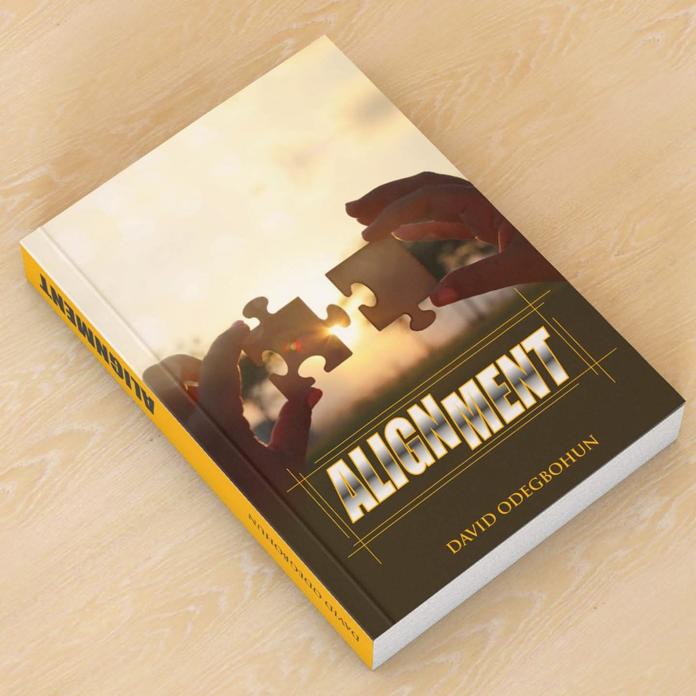
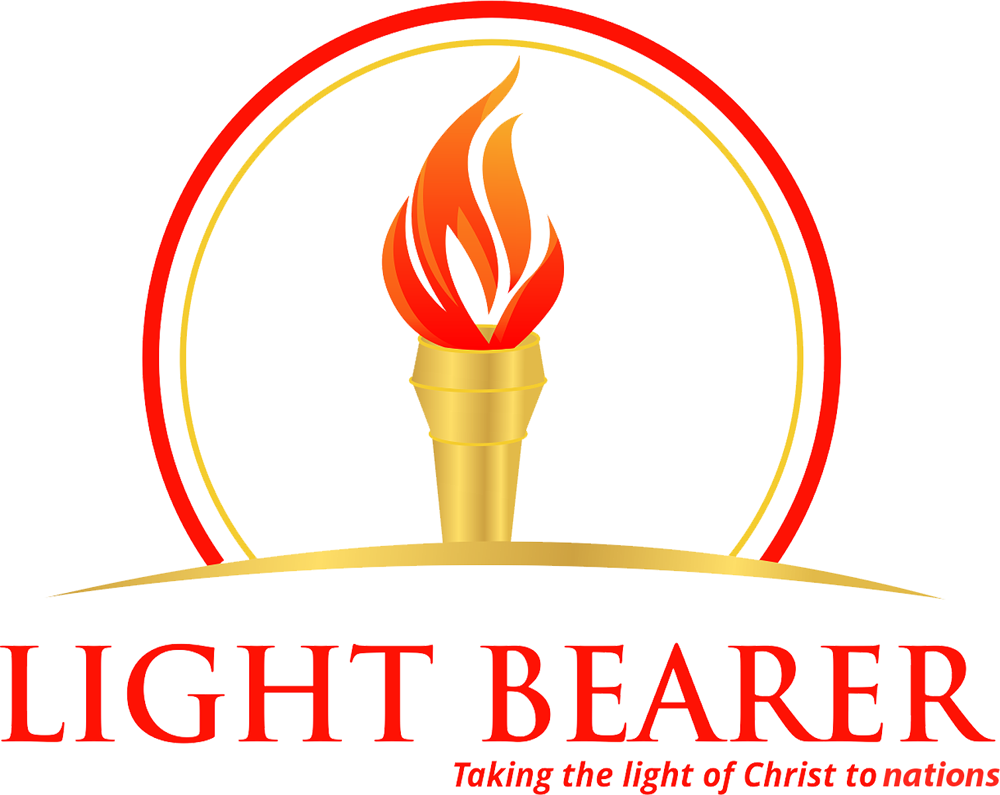
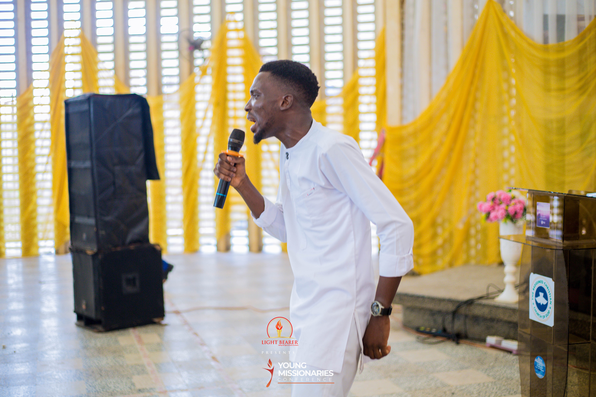

Books library
Alignment
Discover a Christ-centred life that is aligned with God’s purpose. The free books library will be available here shortly.

Pastor DavidLight Bearers Ecclesia
Welcome. Explore free books, teachings, and the work of Pastor David Odegbohun.
Pastor David Odegbohun
About Pastor David
Pastor Odegbohun David Olaoluwa serves as the National Coordinator of Light Bearers Ecclesia International Outreach Ministry, raised with the mandate of taking the light of Christ to the nations.
Through discipleship, outreach, missions, conferences, and teaching, he helps people discover and walk in divine purpose. His ministry reaches teenagers, women, students, ministers, and underserved communities across Nigeria and beyond.
Discover the ministry →Free books
Every book on this site is available freely to read and share.

Books library
Discover a Christ-centred life that is aligned with God’s purpose. The free books library will be available here shortly.
More titles, including Freedom and Journey of Purpose, will be added to the library.
Teachings
Access messages designed to strengthen your faith and equip you for purpose.

Audio teachings
Listen to or download this teaching for free.
Get the audio teaching →The ministry
Light Bearers Ecclesia is expressed through focused arms that reach people at every stage of life and faith.
Creative outreach and discipleship that leads young people into freedom in Christ.
Crusades, medical outreaches, relief, and discipleship in communities across Nigeria.
Retreats and conferences that gather women for renewal and fellowship.
Discipleship that helps believers become grounded, established, and mature.
Connect
For invitations, ministry enquiries, and updates, email Pastor David or connect with Light Bearers Ecclesia on Facebook.